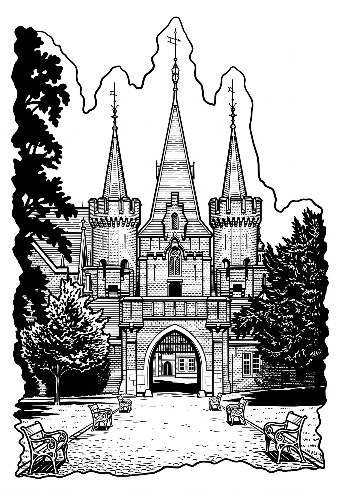

Zámek Hradec nad Moravicí
Moravskoslezský kraj · 315 m n. m.

historická památka · #094
Zámek Hradec nad Moravicí je zámecký komplex ve městě Hradec nad Moravicí v okrese Opava. Areál zámku se nachází v jižní části města na protáhlém ostrohu nad řekou Moravicí. Starší částí je tzv. Bílý zámek, z 19.